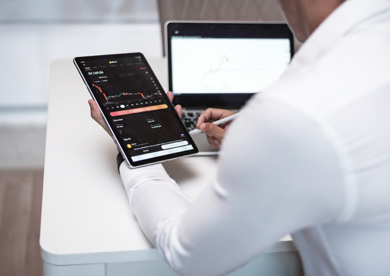

<div class="yxfs_page">
    <div class="fwcon_page">
        <div class="fwcon_con">
            <div class="title_font">
                <div class="title">营销方式同质化、线索质量下降、营销转化率降低</div>
                <div><span></span>尽管数字营销模式越来越重要，但是目前汽车经销商普遍认为其转化率较低，且有效线索的成本逐渐攀高。 </div>
                <div><span></span>从单位成本来看，目前平均集客成本超过了240元人民币/条，高端品牌突破了270元单价；而其最终成交订单的转化率则基本徘徊在3％左右，平均成交转化率非常低。 </div>
                <div><span></span>主要原因是所有经销商把营销广告投入重点都投到垂直平台，营销方式及内容同质化非常严重，如何提高转化率是当务之急。 </div>
            </div>
            
        </div>
        
    </div>
</div>
